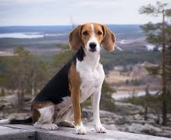

История породы
Финская гончая сформировалась на основе многочисленных пород, ввезённых в Финляндию начиная с XVIII века. В числе её предков английские фоксхаунды, харьеры, керри-бигли, немецкие, английские и швейцарские гончие, русские арлекины и костромские гончие. Первые упоминания о финских гончих относятся к 1850 году, но наиболее важную роль в судьбе породы сыграл живший в Пори ювелир Таммелин. В 1870 году он начал разведение и селекцию финских гончих и получил в общей сложности 23 поколения (1762 собаки). Отбор был нацелен на закрепление отличных рабочих качеств, приспособленность к условиям суровой снежной зимы. Внешний вид собаки учитывался в меньшей степени, но в стандарте породы, утверждённом финским кеннел-клубом в 1932 году, был окончательно закреплен трёхцветный окрас.